Description du projet
Paaxio est un projet universitaire ambitieux qui se divise en deux phases.
La première phase (première année) a consisté à rédiger un cahier des charges complet définissant
les fonctionnalités et les spécifications du site. La deuxième phase (actuellement en cours en deuxième année)
implique le développement du site web fonctionnel respectant ce cahier des charges.
Concept du projet
Paaxio est une plateforme innovante destinée à offrir une expérience utilisateur unique.
Le projet combine design moderne et fonctionnalités avancées pour répondre aux besoins spécifiques définis dans le cahier des charges.
Phase 1 - Cahier des charges (Année 1) ✓
- Analyse des besoins utilisateurs
- Définition des fonctionnalités principales
- Spécifications techniques détaillées
- Création de wireframes et prototypes
- Planification du projet
Phase 2 - Développement web (Année 2)
Cette phase consiste à implémenter le cahier des charges précédemment défini.
Le site sera développé en respectant scrupuleusement les spécifications et en
utilisant les meilleures pratiques de développement web.
Objectifs de développement
- Créer une interface utilisateur attrayante et intuitive
- Implémenter les fonctionnalités selon les spécifications
- Gérer les données de manière sécurisée
- Assurer une expérience utilisateur optimale
- Respecter les standards web et d'accessibilité
- Assurer la performance et la scalabilité
Technologies utilisées
HTML5
CSS3
JavaScript
PHP
MySQL
Points forts attendus
- Respect strict du cahier des charges
- Interface utilisateur professionnelle
- Code modulaire et maintenable
- Documentation complète
Apprentissages attendus
- Gestion complète du cycle de développement d'un projet
- Implémentation d'un cahier des charges en environnement professionnel
- Travail en équipe et collaboration
- Gestion de projet et planification
- Développement full-stack
État du projet
Phase 1 : Cahier des charges complété et validé
Phase 2 : En cours de développement